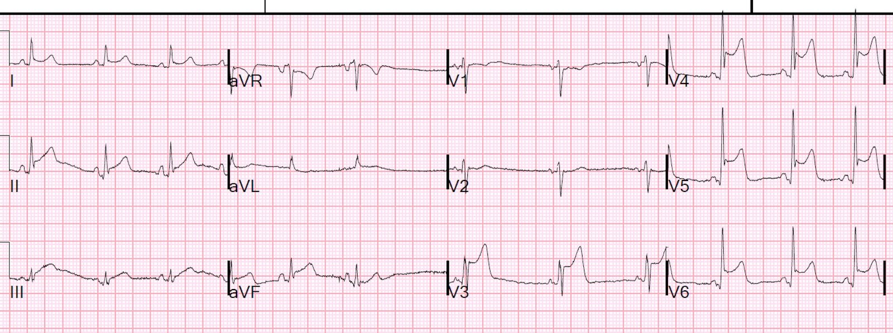
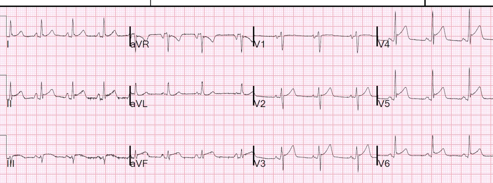
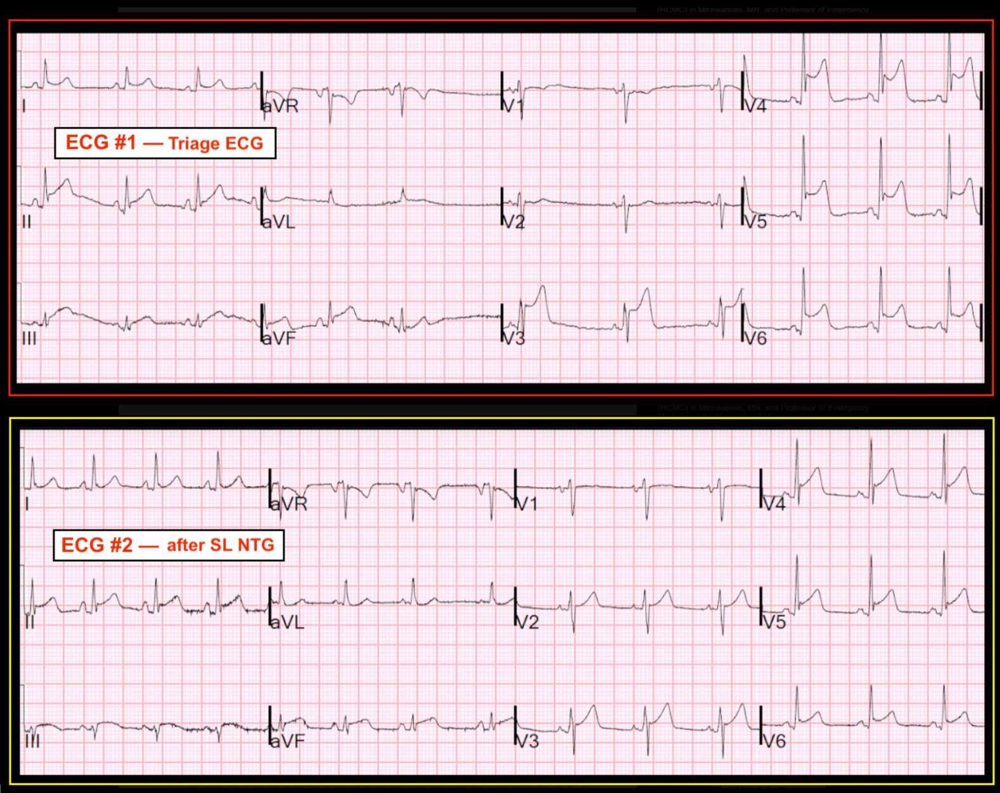
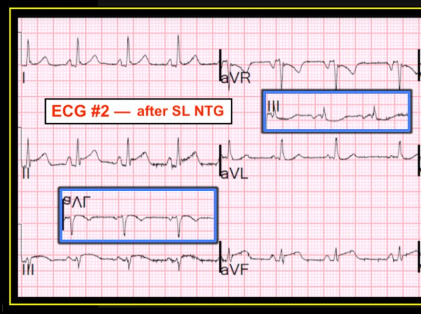

24/10/2018 — Đây có phải STEMI không? Không, xét theo định nghĩa thì không! Vì sao không? Vì sao điều này quan trọng?
Bản dịch tiếng Việt của bài "Is this a STEMI? No, not by definition! Why not? Why is this Important?" – Dr. Smith’s ECG Blog. Giữ nguyên toàn bộ 6 hình ảnh và 1 video của bản gốc.
Một bệnh nhân nam 40 mấy tuổi đến khám vì khó thở và tê tay trái, có lẽ kèm cảm giác thắt ngực, trong 1 1/2 giờ.
Đây là điện tâm đồ lúc phân loại (triage) của bệnh nhân:


Hình ảnh này gần như chắc chắn chẩn đoán STEMI, có lẽ do LAD "vòng qua mỏm" (wraparound)
Phòng thông tim (cath lab) đã được kích hoạt.
Bệnh nhân được dùng nitroglycerin ngậm dưới lưỡi và triệu chứng cải thiện rất nhiều, và một điện tâm đồ khác được ghi:


Nếu bạn chưa thấy điện tâm đồ trước đó, bạn có thể đã gọi đây là ST chênh lên biến thể bình thường, hay tái cực sớm – có các sóng J hình thành rõ.
Vì có ST chênh xuống soi gương (reciprocal) ở aVL, không nên gọi đây là tái cực sớm.
Giả sử bạn đã dùng công thức thì sao?Các giá trị: STE60V3 = 2,0, QRS V2 = 10, RAV4 = 15,5, QTc = 377 theo máy tính
Giá trị công thức 4 biến = 16,2, là rất thấp và gợi ý tái cực sớm
Bệnh nhân được đưa vào phòng thông tim và thấy LAD típ III (vòng qua mỏm — wraparound) với một vùng mờ (hazy) ở đoạn gần. Dòng chảy tốt. Tổn thương này được chẩn đoán bằng IVUS (siêu âm trong lòng mạch) là mảng xơ vữa bị nứt vỡ. Tổn thương đã được đặt stent.
Troponin I lúc 0 giờ, lấy máu 2 giờ sau khởi phát triệu chứng, dưới giới hạn phát hiện (LoD, thấp hơn 0,010 ng/mL.
Một troponin lấy sau đó, 6 giờ sau khởi phát triệu chứng, vẫn dưới LoD.
Không lấy thêm troponin nào nữa.
Do đó, ca này không đáp ứng định nghĩa nhồi máu cơ tim (Định nghĩa toàn cầu lần thứ 4 về nhồi máu cơ tim), vốn đòi hỏi ít nhất một giá trị troponin trên ngưỡng 99% của khoảng tham chiếu. Có thể các troponin sau đó đã tăng nếu chúng được lấy. Nhưng cũng có thể không.
Bạn có thể thấy khiếm khuyết của định nghĩa nhồi máu cơ tim. Đây rõ ràng là thiếu máu cục bộ dưới thượng tâm mạc nặng gây ST chênh lên, nhưng không kéo dài đủ lâu để gây ra ổ nhồi máu có thể đo được.
Vì vậy đây là “Đau thắt ngực không ổn định có ST chênh lên thoáng qua (Transient ST Elevation Unstable Angina).” Vì có mảng xơ vữa nứt vỡ, đây KHÔNG phải là đau thắt ngực Prinzmetal.
Vì sao điều này quan trọng?
1. Thứ nhất, cái tên (Nhồi máu cơ tim hay Không) không quan trọng. Tình trạng này vẫn nguy hiểm y như vậy, vì có một mảng xơ vữa nứt vỡ kèm huyết khối (đã tự tiêu) ở LAD đoạn gần.
2. Hãy tưởng tượng nếu bạn chỉ ghi điện tâm đồ thứ 2. Bệnh nhân sẽ không được chẩn đoán hội chứng vành cấp và sẽ không được chụp mạch vành, sẽ được cho xuất viện (hoặc có lẽ được làm nghiệm pháp gắng sức, vốn sẽ âm tính), và sẽ có nguy cơ rất cao gặp một biến cố khác, có thể dẫn đến tử vong hoặc suy tim.
Đây là nhiều ca đau thắt ngực không ổn định khác, bất chấp bài “Requiem for Unstable Angina” (Khúc cầu hồn cho đau thắt ngực không ổn định) của Eugene Braunwald.
Vậy đau thắt ngực không ổn định vẫn tồn tại [ngay cả với troponin độ nhạy cao (hs)].
Đây KHÔNG phải là troponin độ nhạy cao, nhưng chúng ta biết từ một vài nghiên cứu rằng, ngay cả khi dùng hs-cTnI, đau thắt ngực không ổn định vẫn tồn tại:
Hai slide này lấy từ bài giảng gần đây của tôi về troponin độ nhạy cao:
Slide 23 trong bài giảng.
Thelin và cs. Eur Ht J, Acute Card Care 2014; 4(5):403-9
• hs-cTnT ban đầu ở 478 bệnh nhân đến khám với đau ngực là triệu chứng chính
• 160 (33,5%) có giá trị dưới 5 ng/L
• NPV 100% đối với NSTEMI (70 NSTEMI; 37 UA)
• NPV chỉ 94% đối với bất kỳ ACS nào (bao gồm đau thắt ngực không ổn định)
• Độ nhạy 91% (80-95)
– Bỏ sót 10 trong 107 ca ACS được chẩn đoán bằng chụp mạch vành; 8 ca PCI
• Đánh giá lâm sàng và xác suất tiền nghiệm của ACS là then chốt
Slide 32.
Mokhtari và cs. JACC 2016;67:1531.
Thuật toán 0/1 giờ, có so với không có điện tâm đồ và đánh giá tổng thể (Gestalt)
Chỉ riêng phác đồ 0/1 giờ (giống như các phác đồ hs-TnT 0/1 giờ khác)
– Loại trừ 65% (n = 682)
– Độ nhạy 87% đối với ACS nếu tính cả đau thắt ngực không ổn định là một MACE trong 30 ngày
• Phác đồ 0/1 giờ + điện tâm đồ không có dấu thiếu máu cục bộ + đánh giá Gestalt không phải nguy cơ cao
– Nguy cơ theo Gestalt = rất thấp, thấp hoặc trung bình (không phải nguy cơ cao)
– Loại trừ 60% (n = 625)
• Độ nhạy 97,5% (92,9-99,5), NPV 99,5% (98,6-99,9).

==================================
BÌNH LUẬN CỦA TÔI, bởi KEN GRAUER, MD (24/10/2018):
==================================
Bài viết này của Dr. Smith nêu ra những điểm giảng dạy quan trọng. Bao gồm: i) nhận thức được định nghĩa “STEMI cấp” có thể gây rắc rối đến mức nào; và, ii) minh họa việc phụ thuộc vào định nghĩa này có thể dẫn đến bỏ sót tắc mạch vành cấp như thế nào.
- Tôi tập trung bình luận vào một số chi tiết tinh tế bổ sung liên quan đến việc đọc điện tâm đồ của 2 bản ghi trong ca này (Hình 1):


=========================
Điện tâm đồ #1 = điện tâm đồ lúc phân loại (triage) ban đầu (TRÊN) — Như Dr. Smith đã nêu, ST chênh lên ấn tượng ở các chuyển đạo V3 đến V6, cộng thêm ST chênh lên ở từng chuyển đạo thành dưới ở một bệnh nhân có triệu chứng mới, gần như chắc chắn chẩn đoán tắc LAD cấp. Một cách thích đáng, phòng thông tim đã được kích hoạt.
- Việc không có ST chênh lên ở V1 và V2 gợi ý vị trí tắc ở LAD đoạn giữa (chứ không phải đoạn gần).
- Lưu ý có trôi đường nền ở chuyển đạo aVL của điện tâm đồ #1. Điều này khiến khó đánh giá thay đổi soi gương ở chuyển đạo này — vì có ST dạng lõm (scooping) gợi ý chênh xuống nhẹ ở 2 phức bộ đầu tiên — nhưng nếu có gì thì là ST chênh lên nhẹ ở phức bộ thứ 3 của chuyển đạo này. Liếc qua chuyển đạo aVF được ghi đồng thời trong điện tâm đồ #1 xác nhận rằng nhiễu là lý do khiến sóng ST-T trông khó đánh giá ở 3 nhát bóp được hiển thị ở chuyển đạo aVL — với điều cốt lõi là ST chênh xuống soi gương ở aVL trong điện tâm đồ #1 chỉ ở mức khiêm tốn (nếu có).
- Mặc dù không có dải nhịp chuyển đạo dài — đáng chú ý là có loạn nhịp xoang rõ rệt trong điện tâm đồ #1. Dấu hiệu này dễ bị bỏ sót vì không có chuyển đạo II dài … Có lẽ loạn nhịp xoang rõ rệt này phản ánh trương lực phế vị tăng? Dù sao đi nữa, loạn nhịp xoang ít rõ rệt hơn nhiều ở điện tâm đồ #2 sau khi ngậm NTG dưới lưỡi (SL) với triệu chứng cải thiện.
- VƯỢT RA NGOÀI phần CỐT LÕI: Có các sóng J nổi bật cực độ ở 2 chuyển đạo của điện tâm đồ #1 có ST chênh lên rõ nhất (tức là chuyển đạo V4 và V5). Mặc dù vẫn còn ở điện tâm đồ #2 — hãy lưu ý các sóng J này kém nổi bật hơn bao nhiêu sau khi được cho là đã tái tưới máu. Chúng tôi đã từng bàn về hiện tượng này (Vui lòng xem phần T.B. (P.S.) ở cuối trang trong Bình luận của tôi, từ bài blog của Dr. Smith ngày 11 tháng Bảy năm 2018). Có vẻ như đôi khi — sóng J có thể được gây ra bởi thiếu máu cục bộ (được cho là phản ánh dòng tổn thương cấp do nhồi máu cơ tim sắp xảy ra). Liệu đây có phải là lý do của các sóng J rất nổi bật ở chuyển đạo V4 và V5 của điện tâm đồ #1 hay không sẽ rõ ràng hơn NẾU chúng ta có điện tâm đồ thứ 3 được ghi muộn hơn một chút cho thấy các sóng J này đã biến mất hoàn toàn.
CÂU HỎI: Hãy tiếp tục với câu hỏi Dr. Smith đặt ra ở trên:
- Hãy tưởng tượng điện tâm đồ duy nhất bạn được đưa xem là Điện tâm đồ #2 (= bản ghi DƯỚI trong Hình 1). Hai lần troponin đều âm tính. Như đã nêu, bệnh nhân là nam giới khoảng 40 tuổi, trước đây khỏe mạnh, bị khó thở, tê tay trái và thắt ngực trong ~1,5 giờ. Vì sao bạn nên cưỡng lại việc gọi đây là tái cực sớm?
TRẢ LỜI: Dr. Smith đã chỉ ra rằng chỉ riêng sự hiện diện của ST chênh xuống soi gương ở chuyển đạo aVL đã cho bạn biết điện tâm đồ #2 không phải là hình ảnh tái cực sớm lành tính. Các dấu hiệu điện tâm đồ đáng chú ý khác ở điện tâm đồ #2 bao gồm:
- Mức ST chênh lên ở điện tâm đồ #2 lớn nhất ở chuyển đạo V4 và V5. Mức này rất ít (tức là không quá 1mm) ở chuyển đạo V2. Sự phân bố ST chênh lên như vậy không phải là hình ảnh mong đợi ở tái cực sớm.
- Hình dạng của đoạn khởi đầu ST ở chuyển đạo aVF là thẳng. Ở chuyển đạo III nó có dạng vòm (tức là lồi hướng lên, hình “mặt mếu”). Không hình dạng nào trong số này là điều bạn mong đợi ở tái cực sớm.
- Troponin không phải lúc nào cũng tăng khi tắc mạch cấp NẾU tái tưới máu tự phát xảy ra nhanh. Hai lần troponin âm tính không loại trừ khả năng tắc mạch vành cấp trong thời gian ngắn.
- Ngay cả khi bạn nghĩ điện tâm đồ #2 trông giống tái cực sớm — vẫn cần thêm dữ liệu vì bản ghi này có ST chênh lên. Điều này có thể bao gồm siêu âm tim được làm trong lúc có triệu chứng (tìm rối loạn vận động thành) — và — các bản ghi liên tiếp để tìm thay đổi động. Chẩn đoán tái cực sớm ở một bệnh nhân có triệu chứng mới luôn phải là chẩn đoán loại trừ, chỉ được đưa ra sau khi bạn đã loại trừ khả năng có biến cố cấp.
Cuối cùng — Nếu điện tâm đồ #2 là tái cực sớm — chúng ta sẽ mong đợi có chút ST chênh lên ở chuyển đạo aVL. Thay vào đó (như Dr. Smith đã nêu) — có thay đổi soi gương ở chuyển đạo này. Thay đổi này tinh tế — nhưng chắc chắn có mặt. Để giúp tăng khả năng nhận ra ngay lập tức bức tranh hình soi gương được “vẽ” nên bởi các thay đổi soi gương — chúng tôi đặt chồng hình soi gương của chuyển đạo III lên trên chuyển đạo aVL — và hình soi gương của chuyển đạo aVL lên trên chuyển đạo III (Hình 2).
- Lưu ý rằng hình dạng sóng ST-T của hình soi gương chuyển đạo aVL gần như giống hệt hình dạng sóng ST-T ở chuyển đạo III đặt thẳng.
- Tương tự — hình dạng sóng ST-T của hình soi gương chuyển đạo III gần như giống hệt hình dạng sóng ST-T của chuyển đạo aVL đặt thẳng.
- Dấu hiệu thay đổi soi gương dạng hình soi gương ở chuyển đạo III và aVL ở một bệnh nhân có triệu chứng mới gần như chắc chắn chẩn đoán một biến cố cấp!

